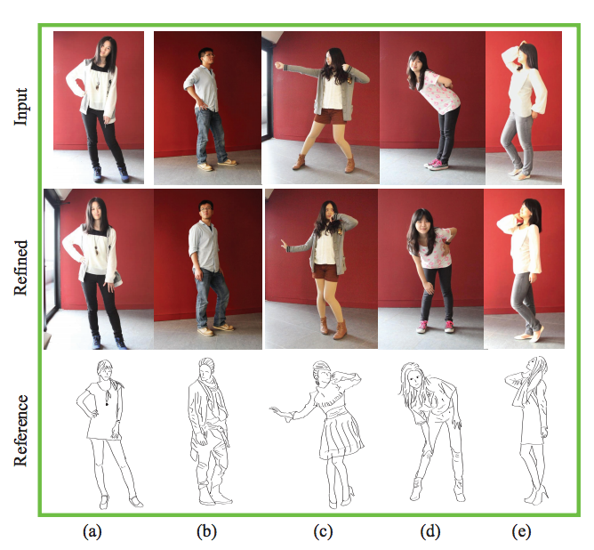
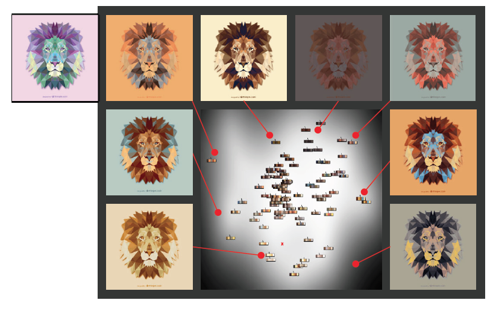

Huy Phan Ph.D in Creative Media
Huy Phan Ph.D in Creative Media
Department of Computer Science  H.Q.Phan AT bath.ac.uk
H.Q.Phan AT bath.ac.uk
Recent News
- Jul 21, 2016 — My homepage is now online.
- Jun 20, 2016 — I have moved to the University of Bath.
- May 01, 2016 — My PhD journey has to a happy ending!
Research Projects
| FlexyFont: Learning Transferring Rules for Flexible Typeface Synthesis URI: http://dx.doi.org/10.1111/cgf.12763 Abstract: Maintaining consistent styles across glyphs is an arduous task in typeface design. In this work we introduce Flexy- Font, a flexible tool for synthesizing a complete typeface that has a consistent style with a given small set of glyphs. Motivated by a key fact that typeface designers often maintain a library of glyph parts to achieve a consistent typeface, we intend to learn part consistency between glyphs of different characters across typefaces. We take a part assembling approach by firstly decomposing the given glyphs into semantic parts and then assembling them according to learned sets of transferring rules to reconstruct the missing glyphs. To maintain style consistency, we represent the style of a font as a vector of pairwise part similarities. By learning a distribution over these feature vectors, we are able to predict the style of a novel typeface given only a few examples. We utilize a popular machine learning method as well as retrieval-based methods to quantitatively assess the performance of our feature vector, resulting in favorable results. We also present an intuitive interface that allows users to interactively create novel typefaces with ease. The synthesized fonts can be directly used in real-world design. |
|
| Look Closely: Learning Exemplar Patches for Recognizing Textiles from Product Images URI: http://dx.doi.org/10.1007/978-3-319-16865-4_30 Abstract: The resolution of product images is becoming higher dues to the rapid development of digital cameras and the Internet. Higher resolution images expose novel feature relationships that did not exist before. For instance, from a large image of a garment, one can observe the overall shape, the wrinkles, and the micro-level details such as sewing lines and weaving patterns. The key idea of our work is to combine features obtained at such largely different scales to improve textile recognition performance. Specifically, we develop a robust semi-supervised model that exploits both micro textures and macro deformable shapes to select representative patches from product images. The selected patches are then used as inputs to conventional texture recognition methods to perform texture recognition. We show that, by learning from human-provided image regions, the method can suggest more discriminative regions that lead to higher categorization rates. We also show that our patch selection method significantly improves the performance of conventional texture recognition methods that usually rely on dense sampling. Our dataset of labeled textile images will be released for further investigation in this emerging field. |
|
|
URI: http://dx.doi.org/10.2312/exp.20161066 Abstract: Creating aesthetically pleasing decorations for daily objects is a task that requires deep understanding of multiple aspects of object decoration, including color, composition and element compatibility. A designer needs a unique aesthetic style to create artworks that stand out. Though specific subproblems have been studied before, the overall problem of design recommendation and synthesis is still relatively unexplored. In this paper, we propose a flexible data-driven framework to jointly consider two aspects of this design problem, style compatibility and spatial composition.We introduce a ring-based layout model capable of capturing decorative compositions for objects like plates, vases and pots. Our layout representation allows the use of the hidden Markov models technique to make intelligent design suggestions for each region of a target object in a sequential fashion. We conducted both quantitative and qualitative experiments to evaluate the framework and obtained favorable results. |
|
|  | Data-driven Suggestions for Portrait Posing URI: http://dx.doi.org/10.1145/2542355.2542391 Abstract: Next to lighting, posing is the most challenging aspect of portrait photography. A commonly adopted solution is to learn by example, which is beneficial for both trained photographers and novice users, especially when subjects have no clue about how to pose themselves. A collection of portrait images by professionals (e.g., [Perkins 2009]) provides a resource for photographers seeking inspiration for their own work. Such handful posing references (e.g., Posing App) have also been made available to smartphone platforms, which offer the unique possibility of directly overlaying camera view with a reference pose as visual guidance. |
|  | Color Orchestra: Ordering Color Palettes for Interpolation and Prediction URI: Abstract: Color theme or color palette can deeply influence the quality and the feeling of a photograph or a graphical design. Although color palettes may come from different sources such as online crowd-sourcing, photographs and graphical designs, in this paper, we consider color palettes extracted from fine art collections, which we believe to be an abundant source of stylistic and unique color themes. We aim to capture color styles embedded in these collections by means of statistical models and to build practical applications upon these models. As artists often use their personal color themes in their paintings, making these palettes appear frequently in the dataset, we employed density estimation to capture the characteristics of palette data. Via density estimation, we carried out various predictions and interpolations on palettes, which led to promising applications such as photo-style exploration, real-time color suggestion, and enriched photo recolorization. It was, however, challenging to apply density estimation to palette data as palettes often come as unordered sets of colors, which make it difficult to use conventional metrics on them. To this end, we developed a divide-and-conquer sorting algorithm to rearrange the colors in the palettes in a coherent order, which allows meaningful interpolation between color palettes. |